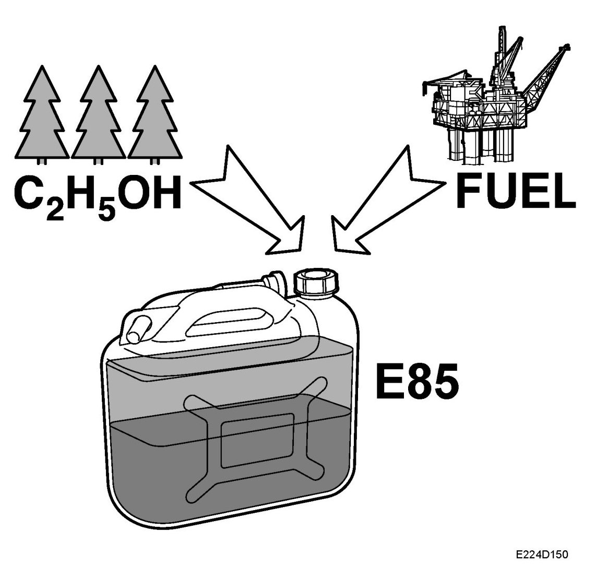
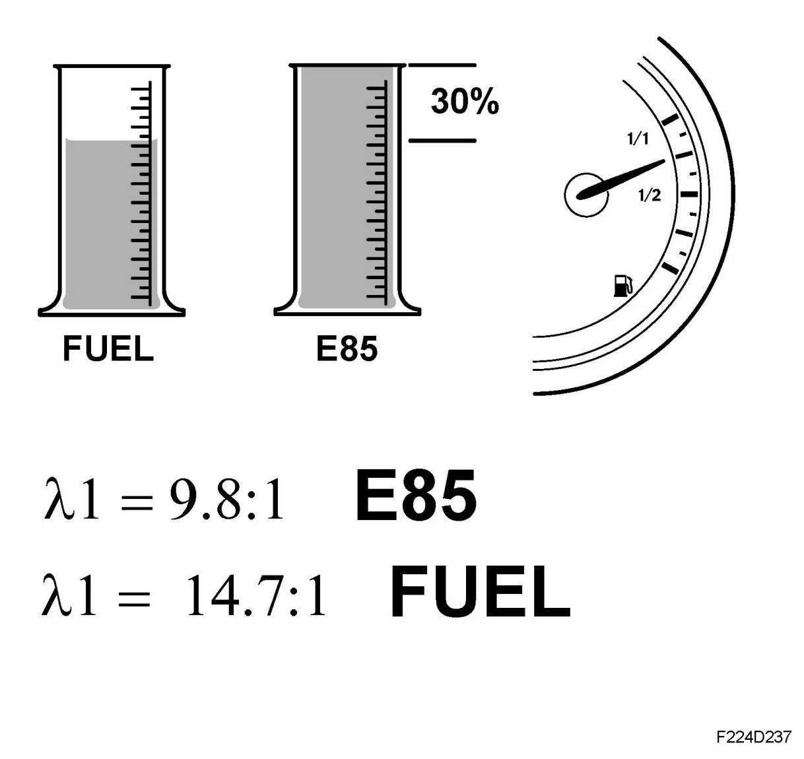

Fuel Properties, E85
Fuel Properties, E85
General
E85 is a mixture of 15% petrol and 85% ethanol. Ethanol has the formula C2H5OH and accordingly differs from petrol as it is one substance and not a mixture of several. Ethanol is an environmentally friendly fuel as it does not add new carbon dioxide to the cycle.
Exposure to ethanol is less dangerous to petrol. E85 must be handled with the same caution as petrol.
Ethanol has the following properties:

- conducts electricity
- dissolves in both water and petrol
- freezing point -144 degrees C
- boiling point +78 degrees C
The weight is slightly higher than for petrol, 0.789 kg/l versus approx. 0.740 kg/l for unleaded 95 octane (RON) petrol.
The energy content of ethanol is 23.7 MJ/l compared with approx. 33.1 MJ/l for petrol. There are different proportions of ethanol in petrol on the world market, although E85 is so far the most common. The reason why E100 is not used is because it is difficult to start an Otto engine with conventional technology at temperatures around +5 degrees C.
E85 is colored red so that it can be easily distinguished from pure petrol for example.
Octane rating
E85 has a high octane rating, normally specified as being around 104 octane (RON), but this can vary depending on the petrol added and how much use is made of other oxygen substitutes (normally MTBE). The high octane rating facilitates the control of combustion in the engine in such a way that high combustion efficiency is obtained without the engine knocking. A good characteristic for a fuel, in particular for a turbocharged engine, as exhaust temperature is lower. This means that the degree of fuel enrichment at high loads can be reduced.
More heat is required during the evaporation of ethanol which is taken from the charge air, which is then cooled. This means that the turbocharger does not need to work with a particularly high charge pressure for the engine torque in question. This also contributes to the reduced requirement for fuel enrichment.
Evaporation
E85 is evaporated poorly at low temperatures which can result in starting difficulties at low temperatures (lower than -12 degrees C).
Fuel consumption
E85 has a lower energy content than petrol, and this means that more fuel is required. In theory, if this is viewed in isolation, 30% more fuel is required. However, by means of the higher octane rating amongst other things, an engine adjustment is possible that results in higher combustion efficiency. This results in slightly lower combustion for certain load and engine speed ranges. This is particularly clear with high engine load.
During operation on normal petrol the mixture ratio for lambda 1 is 14.7:1, for E85 it is lower at 9.8:1.

Fuel effect
E85 acts more aggressively on certain metals and plastics. As E85 holds water and conducts electricity, the risk of corrosion is increased. Selection of plastic, rubber and metals must be adapted.